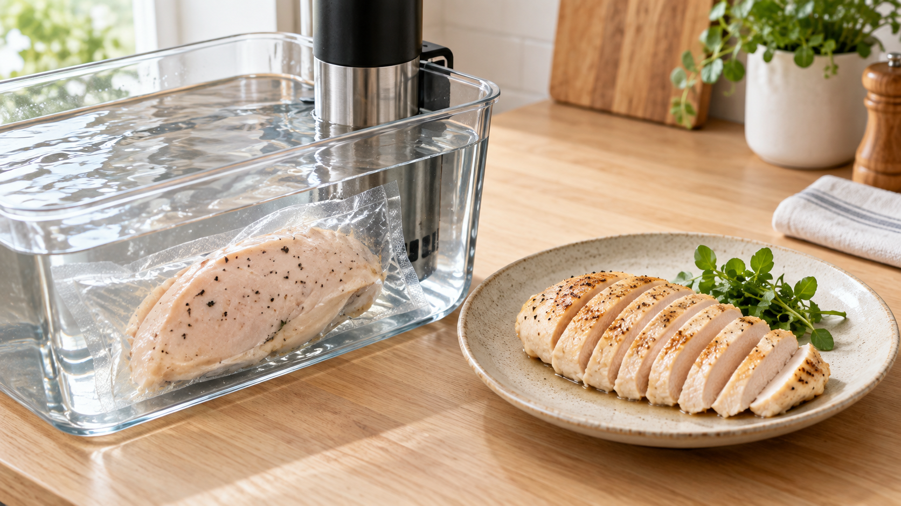

鶏むね肉は、低温だけではやわらかくならない。温度と時間を一組で考える
鶏むね肉をやわらかくしたくて、低温調理器の温度をとにかく下げる。
ところが、切ってみると期待ほどやわらかくない。反対に、時間を長くしすぎて水分が抜けたように感じることもある。
低温調理で大切なのは、低い温度そのものではない。肉の中心まで温まる時間と、中心がその温度に達してから保つ時間を分けて考えることだ。
今日は、厚さ3cm以内の鶏むね肉を70℃の湯で100分加熱する。温度だけで決めず、厚さと時間を一組にして、しっとりした一皿へ近づけよう。
今日の結論
鶏むね肉は、低い温度なら必ずやわらかくなるわけではない。
高温で短く火を入れるより水分を失いにくい温度を選びつつ、中心まで熱が届く時間を確保する。家庭では、完全に解凍した厚さ3cm以内の鶏むね肉を、温度の安定する低温調理器で70℃・100分を一つの目安にする。
この100分は、食品安全委員会が示した約300g・厚さ約3cmの鶏むね肉の加熱例をもとに、中心が70℃へ近づくまでの時間と、その後に必要な保持時間をまとめて取った家庭向けの目安だ。肉が厚い、冷凍のまま、湯量が少ない、機器の温度が安定しない場合には当てはめない。
やわらかさを変えるのは、温度だけではない
肉へ熱が入ると、筋肉を作るたんぱく質の形が変わり、水を抱える力も変わる。強い熱を長く受けるほど筋肉の繊維は縮みやすく、水分が外へ出やすくなる。
だから、低めの温度で火を入れる方法には意味がある。
鶏むね肉を60℃または70℃で加熱した研究では、60℃で1時間加熱した肉は、中心71℃までオーブン加熱した肉より加熱による重量減少が少なく、切るために必要な力も小さかった。60℃で加熱した肉は、やわらかさの評価も高かった。
ただし、この結果を「温度を下げれば下げるほどよい」とは読めない。
別の鶏むね肉の研究では、同じ温度でも加熱時間が延びると水分の失い方が変わり、肉質の違いによっても仕上がりが変わった。温度、時間、肉の厚さ、もとの肉質が重なって、最後の食感が決まる。
低温は魔法ではない。水分を逃がしにくい場所を選び、その場所に必要な時間だけ滞在させる方法だ。
タイマーは、肉を入れた瞬間から同じ意味を持たない
ここが低温調理で最も勘違いしやすい。
湯を70℃にしても、冷たい鶏むね肉の中心がすぐ70℃になるわけではない。外側から中心へ熱が移るまでには、かなり時間がかかる。
食品安全委員会が公開した家庭向けの検証では、約300g、厚さ約3cmの鶏むね肉を設定温度63℃、70℃、75℃の湯で加熱したところ、中心が設定温度へ近づくまで平均で約68〜70分かかった。そのうえで、中心が達温してから63℃なら30分、70℃なら3分、75℃なら1分の保持が必要だと説明している。
つまり、70℃・3分という数字は、湯へ入れて3分という意味ではない。
駅へ着いてから3分待つ約束なのに、家を出た瞬間から数え始めるようなものだ。まず中心温度が目的地へ着く。そこから保持時間が始まる。
また、肉の色や肉汁だけで中心の加熱を判断するのも難しい。加熱した鶏肉の見た目と食感を調べた研究では、色の変化やかたさは、安全な加熱を一貫して示す目印にはならなかった。
だから、今日は見た目ではなく、厚さ、湯温、時間で条件をそろえる。
今日の一皿：70℃でしっとり鶏むね肉
材料（2人分）
- 鶏むね肉 1枚（約300g、厚さ3cm以内）
- 塩 3g（肉の重量の1％）
- 砂糖 1.5g（肉の重量の0.5％）
- オリーブ油 小さじ1
- 黒こしょう 少々
- レモン 1/4個
作り方
- 鶏むね肉は冷蔵庫で完全に解凍する。最も厚い部分を測り、3cmを超える場合は横から開いて厚さを3cm以内にそろえる。この加熱時間を、冷凍肉や3cmを超える肉へそのまま使わない。
- 肉の表面の水気を拭き、塩と砂糖を全体へなじませる。耐熱性があり低温調理に対応した袋へ入れ、空気を抜いて密封する。
- 低温調理器の湯を70℃まで予熱する。袋を完全に沈め、肉を入れてから100分加熱する。袋が浮く場合は、専用の重しや耐熱皿で湯の中へ保つ。
- 袋から取り出して表面の水分を拭く。香ばしさが欲しければ、十分に熱したフライパンへ油を引き、表裏を各30秒ほど焼く。長く焼いて中心まで強く再加熱しない。
- 繊維を断つ向きに7〜8mm幅で切り、黒こしょうを振る。レモンを添えて、すぐに食べる。
この手順では、温度を安定して保てる低温調理器を使う。鍋の火加減だけで70℃付近を長時間保つ方法は、温度が上下しやすいため同じ条件とは考えない。機器の説明書に、より厳しい加熱条件があればそちらを優先する。
厚さをそろえると、料理は急に再現しやすくなる
同じ300gでも、平たく広い肉と、厚く丸まった肉では、中心へ熱が届く速さが違う。
これは鶏むね肉だけの話ではない。豚ロース、ハンバーグ、厚い魚の切り身、じゃがいもにも同じ考え方を使える。重さだけを見るのではなく、最も厚い場所をそろえると、加熱時間の意味がはっきりする。
日常の料理では、二つの時計を持つと考えるといい。
一つ目は、表面から中心へ熱が届くまでの時計。二つ目は、中心が目的の温度に着いてから、その状態を保つ時計だ。
薄く開く、同じ厚さに切る、一度に詰め込みすぎない。こうした小さな工夫は、中心へ熱が届く時間のばらつきを減らす。レシピの「何分」を守る前に、食材の厚さをそろえる。この順番へ変えるだけで、肉料理も根菜料理も失敗しにくくなる。
まとめ
鶏むね肉をやわらかくする近道は、温度をただ下げることではない。
低めの温度は水分の流出を抑えやすい一方、中心まで熱が届く時間と、その後の保持時間が必要になる。肉の厚さやもとの状態が違えば、同じ設定温度でも結果は変わる。
まずは完全に解凍し、厚さを3cm以内へそろえる。70℃の湯で100分加熱し、仕上げの焼きは短くする。
温度と時間を別々に覚えず、一組で考える。そこへ厚さを加えると、低温調理は勘ではなく、再現できる料理になる。
参考文献
- 食品安全委員会. 肉を低温で安全においしく調理するコツをお教えします！ https://www.fsc.go.jp/foodsafetyinfo_map/shokuhniku_teionchouri.html
- 厚生労働省. 食肉の加熱条件に関するQ&A資料. https://www.mhlw.go.jp/content/11121000/000468796.pdf
- Park CH, Lee B, Oh E, Kim YS, Choi YM. Combined effects of sous-vide cooking conditions on meat and sensory quality characteristics of chicken breast meat. Poultry Science. 2020;99(6):3286-3291. https://doi.org/10.1016/j.psj.2020.03.004
- Moretro T, Moen B, Almli VL, Teixeira P, Ferreira VB, Asli AW, Nilsen C, Langsrud S. Cooking chicken at home: Common or recommended approaches to judge doneness may not assure sufficient inactivation of pathogens. PLOS ONE. 2020;15(4):e0230928. https://doi.org/10.1371/journal.pone.0230928
- Baldwin DE. Sous vide cooking: A review. International Journal of Gastronomy and Food Science. 2025. https://pmc.ncbi.nlm.nih.gov/articles/PMC12428365/
- Effects of sous-vide cooking time and temperature on quality characteristics of chicken breast meat. Foods. 2023. https://pmc.ncbi.nlm.nih.gov/articles/PMC10340550/
- Effect of sous-vide cooking temperature on quality parameters of normal and PSE-like chicken breast meat. Foods. 2022. https://pmc.ncbi.nlm.nih.gov/articles/PMC8982239/
※この記事は、家庭で再現条件をそろえるための一般的な調理情報である。肉の厚さ、初期温度、機器の精度、湯量で中心温度の上がり方は変わるため、使用する低温調理器の説明書も確認すること。